The Makings of
a Pervert Detector
I started with a question about who gets to record us. 7 weeks of ideating, prototyping, and iterating later, I had CAP: a wearable privacy focused device with Cappy, a little companion with cute eyes that always looks out for you.
PDF DocumentationComing up with the idea
During orientation week, one of our professors asked us to imagine ourselves five years into the future and write a newspaper article about it. I was feeling pretty disillusioned by the direction tech is going into, so I wrote a hit piece on future me for selling out and creating “AI and AR powered smart glasses for cats.” It was funny, but the worry behind it was real.
Our assignment for the studio was to look into a modern technical innovation that has been controversial and look at how people are responding to it while coming up with our own response. The concern regarding technologies like the meta glasses was in the back of my head since the orientation. Camera-equipped glasses were making it easier to record people without asking, while the people being recorded had very little say. I decided to take this up for my project and come up with my own response to this problem
I explored three ideas. A malicious QR code might exploit the glasses’ automatic scanning, but that route had already been patched after Google Glass. Anti-facial-recognition clothing could disrupt some computer vision systems, but wouldn’t stop someone recording a video. A wearable BLE detector felt like the most useful direction: make the presence of the device visible to the people around it.

Finding something I’d want to wear
I called the project CAP, short for Catch a Pervert. The name was deliberately provocative; the design needed to make people curious enough to talk about privacy without asking them to wear a warning sign.
My moodboard pulled together e-ink name tags, pendants, hair clips, watches, and lilguy. I also entertained a hat with a police siren and a mannequin with laser eyes at building entrances. Those were fun detours, but I kept coming back to a companion you could carry with you.
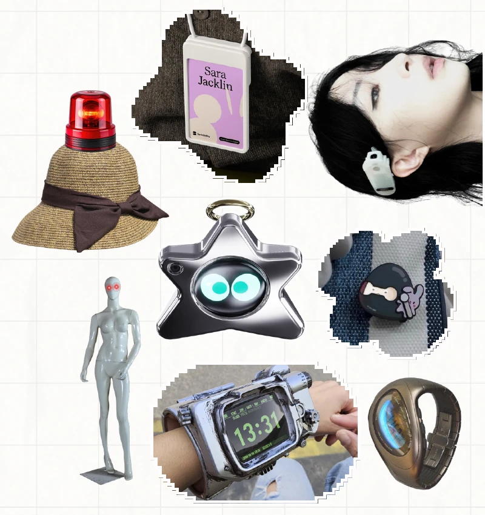
An e-ink name tag was my first design direction, but a good E-ink display was outside my budget, so I switched to a 1.28-inch round TFT LCD. After deciding on the shape and size of the screen, I used Figma to sketch my first 2D prototypes of the form factor of this device.
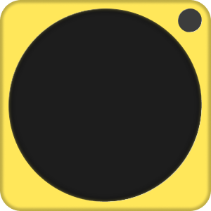
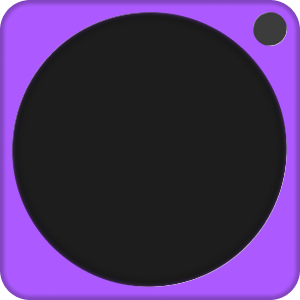
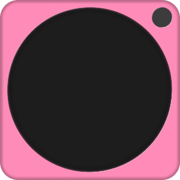
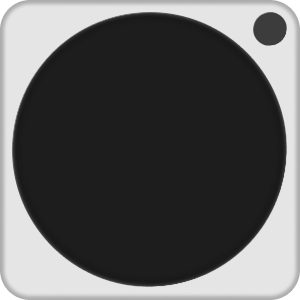
The parts list settled around an ESP32-S3-Zero, the round screen, a battery, and USB-C charging. I still had to decide how CAP would alert me beyond Cappy’s display; that eventually became the vibration motor.
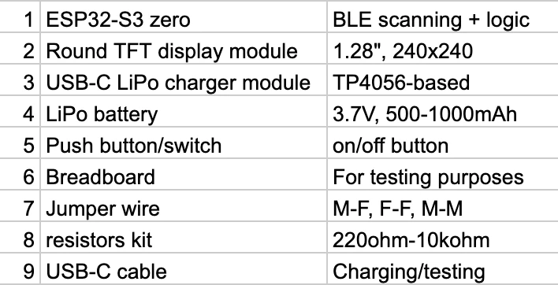
Learning what I’d forgotten to measure
I went shopping for parts on SP Road in Bengaluru, asked friends who knew electronics for help, and got my ESP32’s RGB LED cycling through colours. It was a small win that made the rest feel possible.
My first attempt at Bluetooth detection was much less successful. I asked an LLM for code to detect my Apple Watch and expected it to be straightforward. Modern devices randomize bluetooth identifiers and don’t announce themselves with a stable, obvious name; my first few attempts failed because I didn't understand modern Bluetooth protocols yet.
Defeated from my last attempt, I looked online and found the open-source Nearby Glasses Android app repository on GitHub and adapted its approach to my ESP: sniff BLE advertisements for company identifiers and device-name strings. I added my Nothing earphones to the target list with every other popular smart glasses so I could test the reactions in real time without having any smart glasses on hand.
For the enclosure, I moved beyond the Tinkercad tools I knew and learned Fusion 360 through YouTube. I measured my components with a measuring tape and made the case as compact as I could. I remembered tolerances, but forgot how much space jumper wires take up—and left out a USB cutout.
I had to leave the shell open to connect and power the electronics. I had a form prototype and a functional prototype in the same object, just not at the same time. Fixing this was a pretty clear brief for version two.


Giving Cappy a personality
Once detection was running, I wanted more than an LED changing colour. Inspired by lilguy from my mood board, I designed Cappy’s eyes and animations in after effects, exported GIFs, and used Google’s Antigravity AI to help translate the movement into code that could run on the ESP32.
I gave him happy, curious, angry, and sleepy expressions. White eyes look around when the coast is clear, yellow eyes notice a matching signal, and red eyes object when it gets closer. He could also doze off, which made waking him feel like the next interaction to build.
After feedback on my first ptototype, I went back to the breadboard with an ADXL345 accelerometer and a vibration motor. I tested and calibrated double-knock detection, then used it to wake Cappy into a groggy state. The motor added a sharp vibration for curious and a double vibration for angry, so the wearer could feel the alert without checking the screen.
Another fun last moment addition was the Rage Mode, if someone keeps coming closer after the angry warning, Cappy flashes red while CAP gives three buzzes. It felt like the natural extreme of the character I’d already made.
Watch my early animation test ↗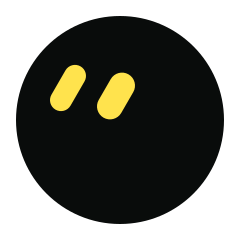
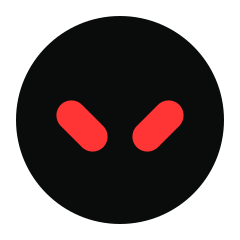
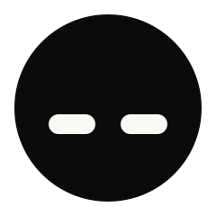


Making room for the whole circuit
I initially wanted to shrink the CAP wearable further. With my current parts that wasn’t realistic, and buying integrated micro-hardware would mean starting over and spending roughly twice as much. After talking it through with my professor, I sized up instead: more room for the electronics, and a face people could see.
I redesigned the CAP 2.0 enclosure in Fusion 360 with proper screen support, a snap-fit connection between the halves, a physical switch slot, and USB-C access. This time I was designing around the actual circuit, learning from my last experience. The orange colour was not part of my original plan but after looking at the filament in Srishti's 3D lab it all came together.
Then came the bit I’d been putting off: soldering. The lab technician and my friend helped me move everything off the breadboard and connect the display, accelerometer, motor, battery, charging circuit, and switch. Without their help, I could very easily have fried the ESP32.


How I turn a signal into a reaction
CAP’s firmware runs a NimBLE scanner alongside the display loop that animates Cappy’s eyes. The device constantly checks advertised manufacturer data and device names against my target list, including my bluetooth earphones that I used for testing. A match gives me an RSSI reading to work with which I can use to approximate the proximity of any smart glass user to CAP.
↓
Manufacturer ID or device-name match
↓
Filtered RSSI = 0.65 * prev + 0.35 * new
↓
Proximity tier + 1 second debounce
↓
Cappy’s eyes + CAP’s haptic feedback
| State | Enter | Return / exit | Approx. range to CAP |
|---|---|---|---|
| Curious | First match below −73 dBm | Angry at ≥ −73 dBm | Within the approximate 1–5 m detection range, beyond the angry boundary |
| Angry | ≥ −73 dBm | Curious below −78 dBm | Transition observed from under 1 m to about 3.5 m |
| Rage | ≥ −55 dBm | Leaves rage below −62 dBm | Closer than angry; separate range not measured |
| Happy | No packet for 1.5 seconds | New match or idle timeout | No matching signal |
| Sleepy / sleeping | 30 / 60 seconds of inactivity | New match or double-knock | No matching signal; follows inactivity |
The approximate detection range is 1–5 m. My test earphones triggered the curious-to-angry transition anywhere from under 1 m to about 3.5 m between rooms. Device orientation and other Bluetooth traffic affect it; these are prototype observations, and I still need to test the ranges with actual smart glasses.
I render the eyes with LovyanGFX at a target of around 30fps, using a 40 MHz SPI display configuration in main.cpp. My PlatformIO file still has TFT_eSPI flags at 20 MHz from earlier experiments; LovyanGFX is the active display implementation.
| Part | Connection | ESP32-S3 GPIO |
|---|---|---|
| GC9A01 screen | SCLK / MOSI | 12 / 11 |
| GC9A01 screen | CS / DC / RST | 10 / 9 / 8 |
| ADXL345 | SDA / SCL / INT1 | 1 / 2 / 3 |
| Vibration motor driver | MOSFET control | 4 |
The screen runs on 3.3V. I’ve included my signal pinout here; I haven’t drawn a full power-circuit schematic.
Presenting CAP, introducing Cappy
With the CAP prototype nearly ready, I still needed actual Ray-Ban Meta glasses for my final prototype showcase. After failing to find someone on campus who could assist me with this I went to Reddit and WhatsApp marketplace groups and received two leads: one was understandably nervous about lending expensive glasses to a stranger, and the other unfortunately disappeared the second I mentioned travelling from Yelahanka to JP Nagar.
So I improvised a very special pair of “unreleased” Meta glasses. For the live class demo, she wore the props while carrying my Nothing earphones (added to CAP’s target list) to trigger real-time BLE detection. As she approached, Cappy’s eyes changed and the vibration motor kicked in. Once she stepped away and he dozed off, I knocked twice to wake him.
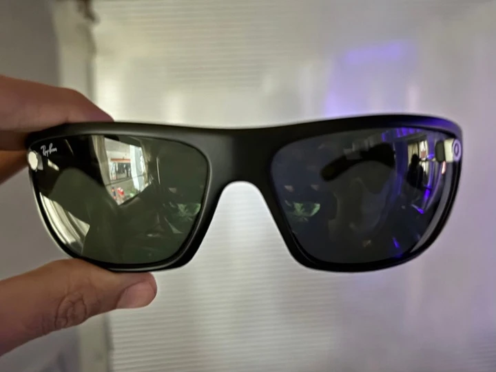
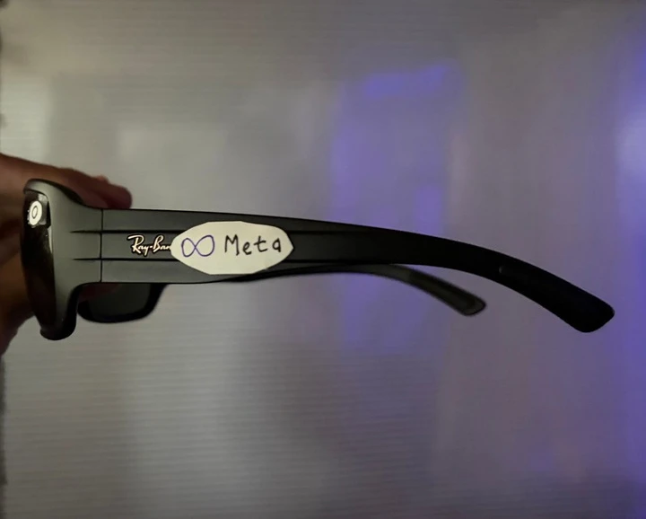
A minimal booth, my final poster, and CAP on my body were enough to let the interaction speak for itself. I enjoyed how quickly people went from meeting the character to talking about privacy and the technology around us.


THE FINAL POSTER
Letting Cappy’s personality lead
I kept the poster light on text and let Cappy’s personality take the lead: he looks around, gets angry for you, and rests when you’re safe.
View the full poster ↗What worked for me?
I brought interface design, CAD, embedded code, and electronics together into a working wearable. The face, buzzes, and knock-to-wake gave people an easy way into the project. The conversations they started helped me understand critical making through practice.
What did wearing it reveal?
CAP’s weight made it sag on my shirt. I kept adjusting or holding it up to see Cappy on the screen. I want to improve the attachment and switch from safety pins to a magnetic system so the wearable stays in place without needing that attention.
What still needs testing?
I saw the curious-to-angry transition shift from under 1m to around 3.5m between rooms. I need to tune the signal behaviour and test with actual smart glasses across device states and environments.
Where would I take CAP next?
I’m still excited to make this a more feasible product for the people around me. A better clip, smaller integrated electronics, and trials with real camera wearables are all directions I’d like to explore, either personally or through my capstone. Sharing the build openly could also give the project a life as tactical media beyond my studio.
The people I learned with
I designed and built CAP as part of my M.A. Experience Design studio, By Any Media Necessary, at Srishti Manipal Institute of Art, Design and Technology.
Thank you to Vineeta for the orientation exercise that started the question, Manuel for the feedback that helped me rethink the form, and Nataraju and Sudarsini for helping me with electronics and soldering. Sudarsini also brought our improvised demo to life.
Matt Ratto’s Critical Making, Alexander R. Galloway’s Protocol, and the Luddite movement helped me connect making with resistance.
I adapted the detection approach from Nearby Glasses. lilguy inspired Cappy’s character, and I used AI assistance to develop the embedded code and recreate my animations.
My 26-page A3 presentation, photographs, CAD model, and firmware document this build. You can download the code and model in the firmware chapter above.
Hervé Studio’s Badge Factory and its assembly guide inspired the explorable object and deeper journal. Three.js shows my CAD model, GSAP handles the scroll transitions, and the browser playground recreates Cappy’s reactions.